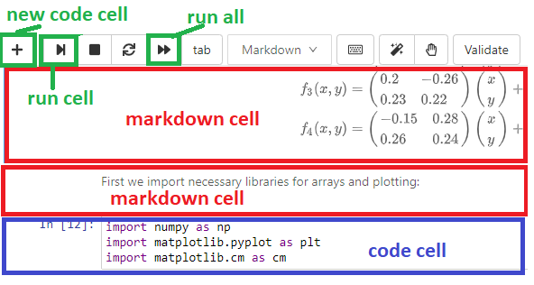
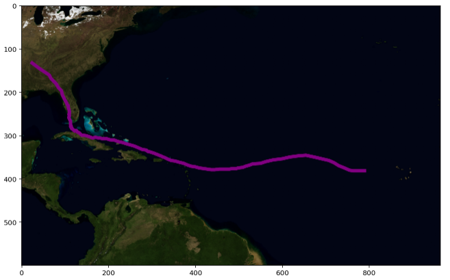

Workshop 1: Getting Started with Cocalc, Jupyter Notebooks and Python¶
Before you start, you need to create a Cocalc account and add your partner as a collaborator [TODO: Link to instructions]
Part 1: Editing and Running Notebooks¶
Step 1: Set up your Cocalc Project¶
Follow these steps to log in to Cocalc and set up collaboration:
Navigate to the Cocalc web site www.cocalc.com.
Click Sign In
Create an account using your UCL email address userID @ ucl.ac.uk (e.g. zcqxxxx @ ucl.ac.uk)
You should see a Project titled something like ‘[your name] - NSCI0010_XX_XX’. If you don’t, this might be because you didn’t use the correct email address in step 3.
Click ‘Account’ in the top-right hand corner.
Enter your first and last names. You can also change your profile picture and other settings if you wish.
Click ‘Projects’ in the top-left corner.
To add your partner as a collaborator, click on your name then enter your partner’s full name or email address (in the form zcqxxxx@ucl.ac.uk) in the box.
Your project is essentially a virtual computer hosted in the cloud, and it comes preinstalled with all the software and tools you need to get Python programming straight away!
Test that you have set up your project correctly:
Both you and your partner should click on the same project to open it. Then click on ‘Tutorials’ > ‘Workshop 1’ > ‘Collaboration_Test.txt’ and start editing the document.
Both you and your partner’s edits should appear as you edit.
Step 2: Open the Week 1 Folder¶
Click on the
Tutorialsfolder then theWorkshop 1folder.
DEFINITIONS:
Cocalc - the online platform we will be using, providing access to virtual computers hosted in the cloud.
Project - Every student has a Cocalc account allowing access to a project, which is a virtual computer including operating system (Linux) and software libraries.
Jupyter Notebook - a type of file which contains Python code and formatted text, allowing us to combine computations, results and descriptive text in a single file. It is also sometimes called an IPython Notebook, and has the extension .ipynb.
Python - the programming language allowing us to perform scientific computing.
Step 3: Open the Barnsley_Fern.ipynb notebook file¶
Click on the file
Barnsley_Fern.ipynbto open the Jupyter Notebook file.
The file contains Python code to generate a Barnsley Fern, a fractal which simulates self-similar patterns found in nature. You don’t need to understand the mathematics, but interested students might like to read about it.
A Jupyter Notebook file is split up into cells. A cell can be of two types: A code cell which contains Python code or a markdown cell containing formatted text. We can select a cell by clicking it with the mouse, and run the selected cell by clicking the run button in the toolbar.

Select the first cell in the notebook and run it by clicking the run cell button .
The second cell should now be selected. After running a cell, the next cell is selected automatically.
Run each cell in the notebook in turn by repeatedly clicking the run cell button.
Nothing will happen until you run the final cell. This is because none of the other cells generate any output! The final cell, however, should generate a plot of a green fern-like shape.
Step 4: Edit Code Cell¶
Jupyter notebooks have two different modes, edit and command. To change to edit mode, press the Enter key; to return to command mode, press the Esc key.
Identify the code cell which contains the line of code
npts = 50000(about half-way down the notebook). Select the cell then pressEnterto change to edit mode.
The variable npts determines the number of points the algorithm will draw.
Change the line to read
npts = 500.
Return to command mode by pressing
Esc.
We’d like to re-run the entire notebook. Rather than running each cell individually, run the entire notebook by pressing the ‘restart and run all’ button  . It should create a very sparse-looking fern.
. It should create a very sparse-looking fern.
Change the line back to
npts = 50000then re-run the entire notebook.
Step 5: Create a new Code Cell¶
To create a new code cell, press the new cell button  . The new cell will be created immediately below the currently selected cell.
. The new cell will be created immediately below the currently selected cell.
Create a new code cell below the bottom cell in the notebook
We’d like to plot another copy of the fern, this time in red.
Copy and paste the two lines of code starting
plt.imshow...into the new code cell, then edit the code to changecm.Greenstocm.Reds. Run the code cell.
You should see another identical fern, this time in red.
Step 6: Delete a Cell¶
To delete a cell, first select the cell then press d twice. (The cell must be in command mode. If the cell is in edit mode, pres Esc first).
Delete the cell you created in Step 5.
Step 7: Create a Markdown Cell¶
A markdown cell contains human-readable formatted text. To create a markdown cell, first we must create a code cell then change it to a markdown cell by pressing the m key. (To change a cell from a markdown cell to a code cell, press the y key).
Create a markdown cell at the bottom of the notebook.
Markdown cells contain text and special formatting instructions. For example, text surrounded by double asterisks symbols is rendered in bold.
Change to edit mode and enter following text:
Thank you for generating the **Barnsley Fern**!
Other formatting instructions include # to denote a heading, *text* for italics and - for a bulletted list.
Instead of clicking the run button, we can use the keyboard shortcut Shift + Enter to run a cell and automatically move to the cell below.
Press
Shift + Enterto render the markup cell.
Part 2: Creating a Python Notebook¶
We will create a Notebook which generates a plot displaying the path of a Hurricane. It will read a time series of hurricane co-ordinates from a text file, and plot the co-ordinates on an image of the Atlantic Ocean. 
Step 2: Plotting Points¶
Create a new code cell, paste in the following code, then execute it.
import matplotlib.pyplot as plt
x = [5, 6]
y = [6, 7]
plt.figure(figsize=(2,2))
plt.scatter(x,y)
You should see a box with two points in it.
You don’t need to fully understand the code yet, but take a look and see if you can identify what each line is doing:
Load the plotting code library.
Create two list variables containing x and y coordinates.
Create a figure and set its size.
Plot the two points (5, 6) and (6, 7).
Notice that the axis limits have been determined automatically.
Set the lower and upper axis limits to 0 and 10 by adding the following code to the bottom of the code cell:
plt.xlim(0, 10)
plt.ylim(0, 10)
Step 3: Plotting an Image¶
In the next step we will display an image of the Atlantic Ocean. First we need to upload the image file to our Cocalc project. To upload a file, open the file browser, navigate to the target folder then click the ‘upload file’ button.
Upload the file
atlantic-basin.pngto the01_Introductionfolder.
Next, we will write code to display the image file.
Create a new code cell and paste in the following code:
import matplotlib.image as mpi
img = mpi.imread('atlantic-basin.png')
plt.imshow(img)
After running the code cell, you should see the map image within a set of axes.
Step 4: Plotting a Point on the Image¶
We’d like to plot the position of New York on the map. New York has latitude/longitude co-ordinates 40.7, -74.0, but to place it on the map image we need to translate to pixel coordinates.
Create a new code cell and add the following code:
# latitude/longitude co-ordinates of edges of map
left = -90
right = -17.06
bottom = 0
top = 45
# dimensions of image in pixels
width = 964
height = 600
# lat/long of New York
lat_NY = 40.7
long_NY = -74.0
# Convert from lat/long to pixel coordinates
x_NY = (long_NY - left)*width/(right-left)
y_NY = (height*(1 - (lat_NY - bottom)/(top-bottom)))
# Print the pixel co-ordinates of New York
print("NY x pos:", x_NY)
print("NY y pos:", y_NY)
This is a lot of code! Don’t worry if you don’t understand what each line is doing.
COMMENTS
The Python interpreter ignores any text that appears after the # symbol. These lines are comments and I have added them to explain what the Python code is doing.
To add the location of New York to the map, use the scatter function as before.
In a new code cell, enter the following code
plt.imshow(img)
plt.scatter(x_NY, y_NY)
plt.text(x_NY, y_NY, "New York", color="white")
Step 5: Loading the Data¶
The co-ordinates of the Hurricane are contained in the file irma.csv.
Upload the file
irma.csvto the01_Introductionfolder.
Each line of the file contains data about the Hurricane at a single time point, separated by commas.
Click on the file to view the contents.
Notice that the latitude and longitude are the second and third item in each row.
Paste the following code into a new code cell.
import csv # load the code library for reading CSV files
x = []
y = []
# Open the data file
with open("irma.csv") as f:
reader = csv.reader(f)
# skip the first line of the file
next(reader)
for row in reader:
latitude = float(row[2])
longitude = float(row[3])
# translate to pixel coordinates
x.append((longitude - left)*width/(right-left))
y.append(height*(1 - (latitude - bottom)/(top-bottom)))
print("x-coords:", x)
print("y-coords:", y)
This code opens the data file and reads the latitude and longitude from each row. It then translates each to pixel coordinates and appends the values to the two lists x and y (and don’t worry, you won’t understand this code yet).
INDENTATION
A peculiar feature of Python is the use of indentation to separate code blocks (other languages use curly brackets { and } or begin ... end). The above example has two levels of identation, one below the with statement and one below the for statement, each idented by exacly four space characters.
Step 6: Plotting the Hurricane¶
Finally, we will plot the hurricane data points on the map.
Enter the following code in a new code cell
plt.imshow(img)
plt.scatter(x, y, color='purple')
Step 7 (Optional): Animating the Plot¶
The following code generates a movie displaying the movement of the Hurricane.
Enter the following code in a new cell.
import matplotlib.animation as animation
fig = plt.figure()
ax = plt.axes()
patch = plt.Circle((0, 0), 20, fc='y')
def init():
patch.center = (20, 20)
ax.add_patch(patch)
return patch,
def animate(i):
patch.center = (x[i], y[i])
return patch,
anim = animation.FuncAnimation(fig, animate,
init_func=init,
frames=len(x),
interval=20,
blit=True)
plt.imshow(img,zorder=0)
anim.save('hurricane_irma.mp4', writer = 'ffmpeg', fps=30)
After running the code, a new file hurricane_irma.mp4 will appear in the 01_Introduction folder (be patient, the code might take a little time to run).
Click on the file
hurricane_irma.mp4to view the movie.